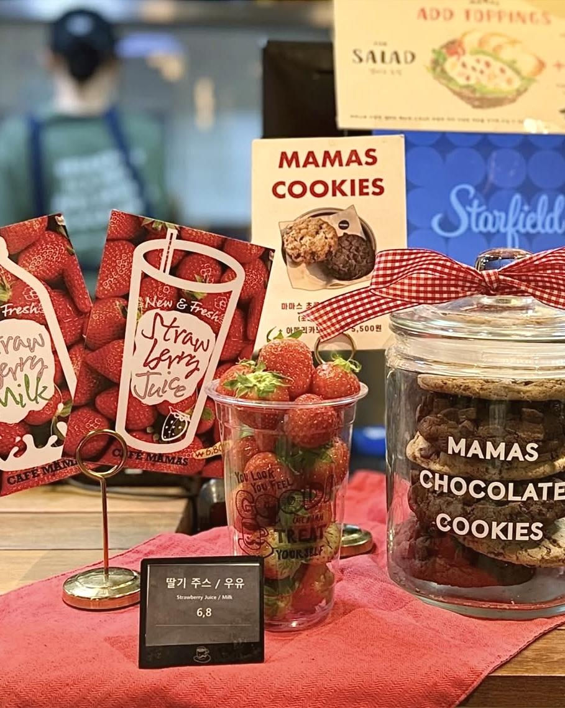
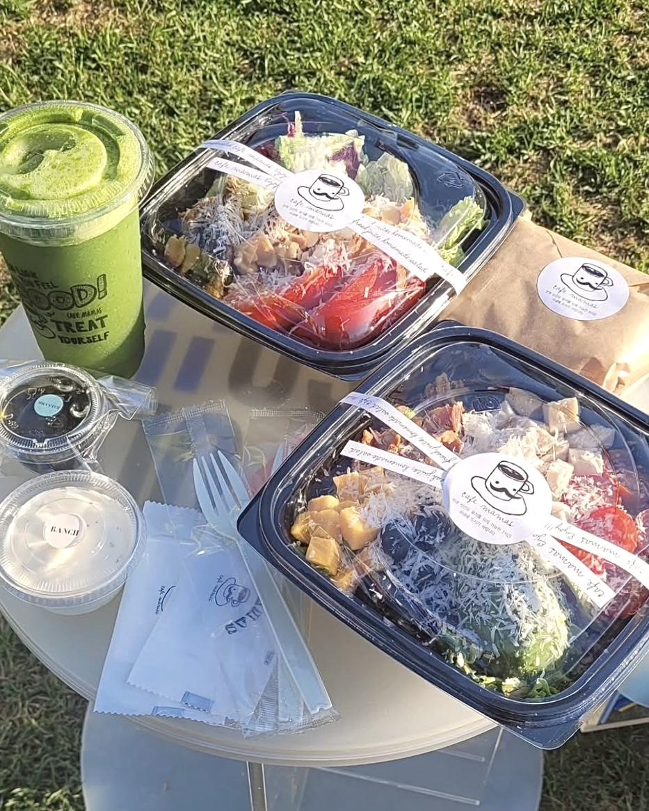
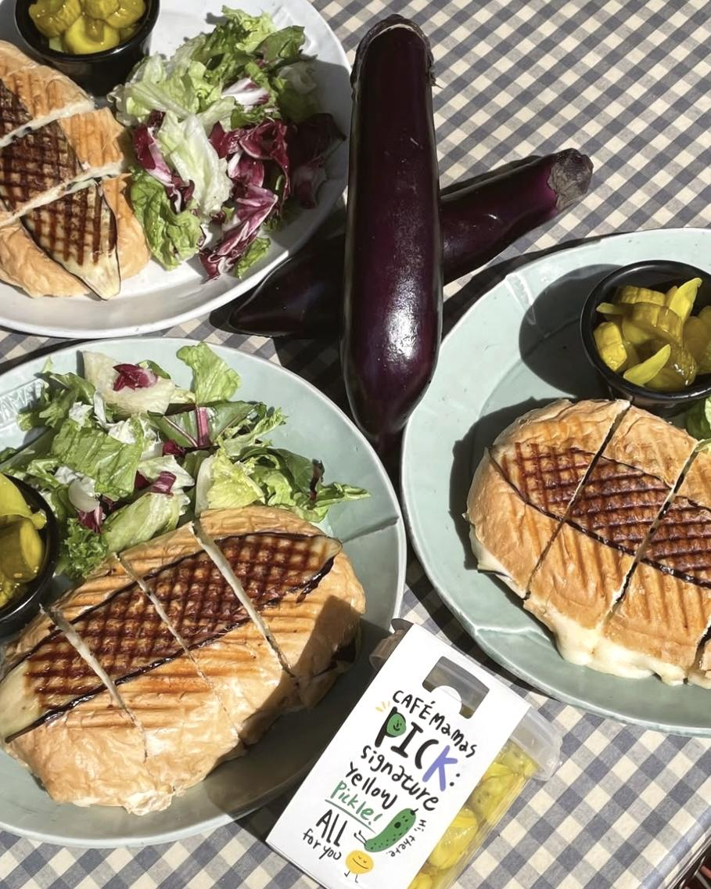
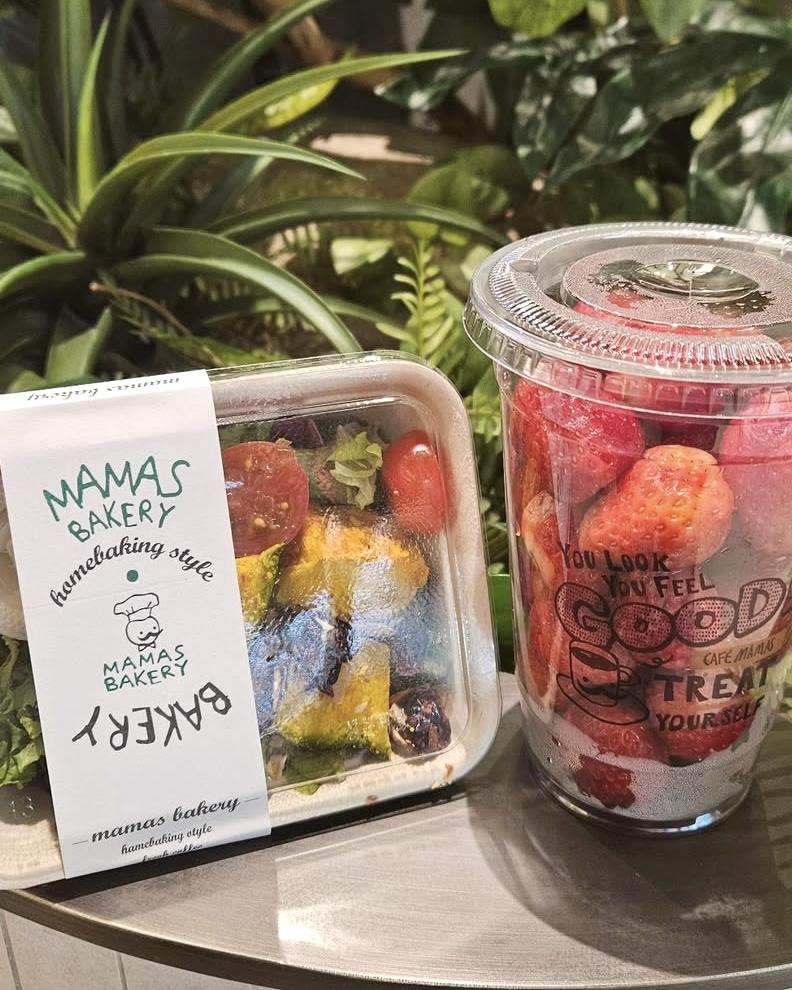

Our Story
마마스의 시작은 작은 주방에서부터
마마스는 단순한 카페가 아닌,
‘매일 먹고 싶은 한 끼’를 만드는 공간에서 시작되었습니다.
초기에는 직원들의 아침을 준비하던 사내 주방에서,
남은 재료로 만든 샌드위치 한 입이 “이 거 어디서 샀어요?”라는 말을 들으면서부터였죠.
그 따뜻한 반응에 힘입어,
우리는 정직한 재료와 손맛으로 누구에게나 편안한 식사를 만들겠다는 다짐을 하게 되었습니다.
직접 만든 치즈, 꼬들하게 구운 파니니, 맑고 상큼한 생과일 주스
모두 마마스의 작은 주방에서 탄생한 진심입니다
오늘의 정직함이, 내일의 마마스를 만듭니다
마마스는 지금도 매일 새벽 3시에 주방의 불을 켭니다.
보글보글 스프 냄비, 손으로 쥐어 짠 주스, 정갈하게 씻은 청포도
소란스럽고 따뜻한 풍경은 오늘도 그대로입니다.
우리는 요란한 기술보다,
신선한 재료와 정직한 조리법이 더 많은 것을 만든다고 믿습니다.
앞으로도 마마스는 소박하지만 진심 어린 식사를 통해
누군가의 아침, 점심, 그리고 하루의 기분을 바꾸는 일을 계속할 것입니다.
마마스는 늘, 당신의 식탁을 위해 준비되어 있습니다.
MAMAS Identity
정직하게, 손으로, 매일 아침부터
Handcrafted
매일 새벽, 마마스 주방은 손으로 시작됩니다.
치즈를 만들고, 파니니를 굽고, 스프를 끓이는 모든 과정은
정해진 공식보다 ‘사람의 감각’으로 완성됩니다.
Fresh Process
마마스는 ‘오늘 만든 건 오늘 소진’이 원칙입니다.
갓 손질한 재료로 짜낸 주스, 정성껏 채운 샐러드는
냉동 없이, 신선함 그대로 손님에게 전해집니다.
Honest Flavor
마마스의 메뉴는 자극적인 맛보다 매일 먹고 싶은맛을
지향합니다. 소스 하나까지 손수 만드는 이유는,
한 입 한 입에 진심을 담기 위함입니다.
마마스의 정성은 오늘도 이어집니다
Freshly Made, Honestly Served
- 
- 
- 
- 

-